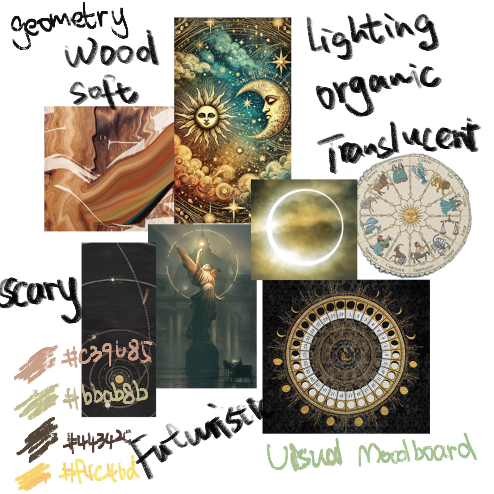
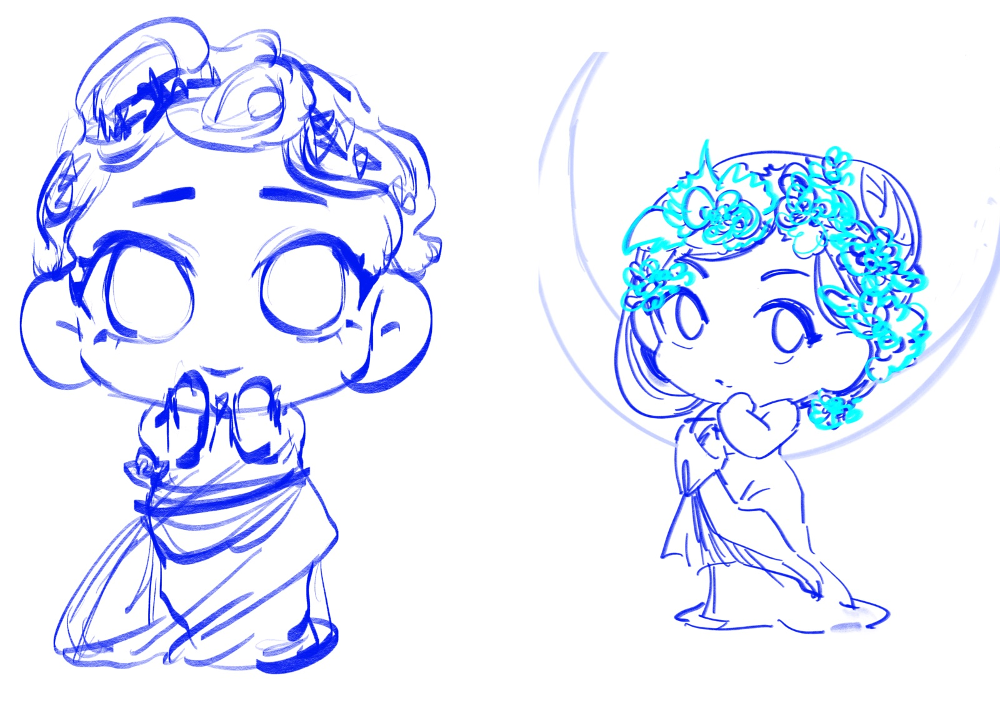
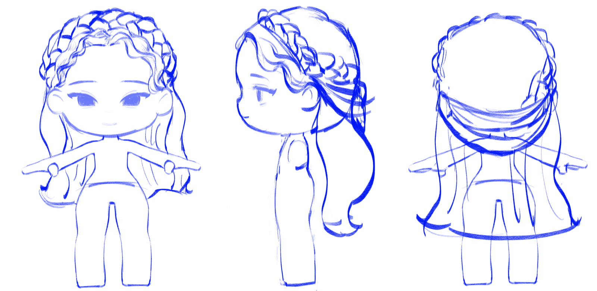
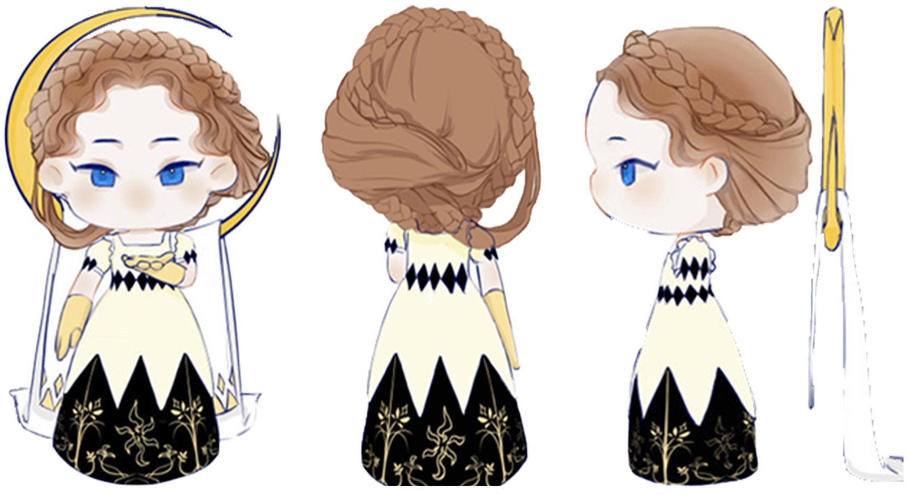
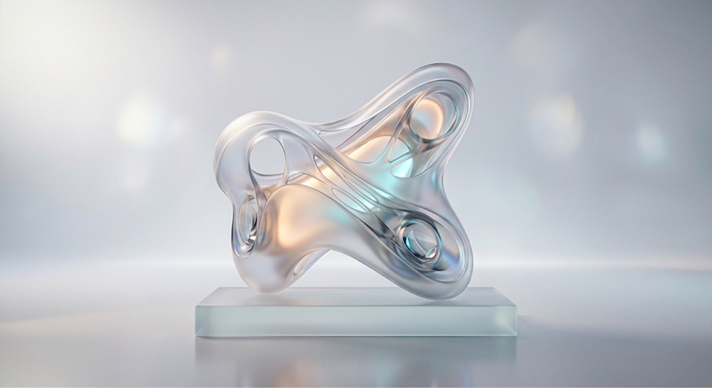
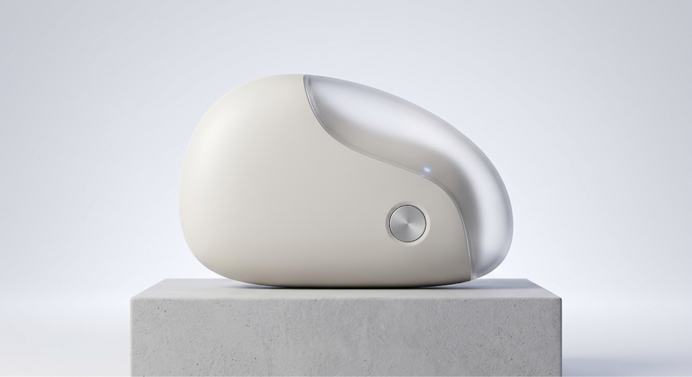
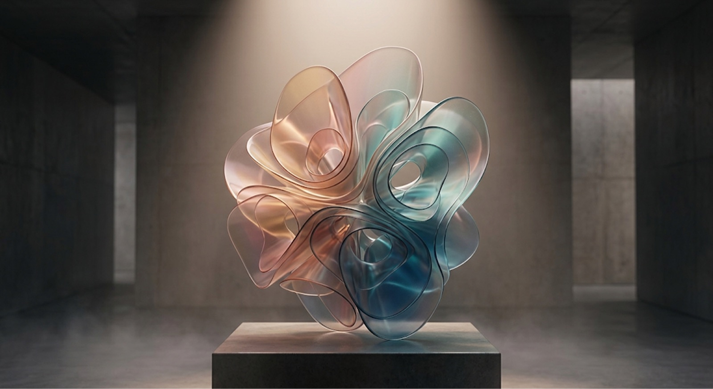
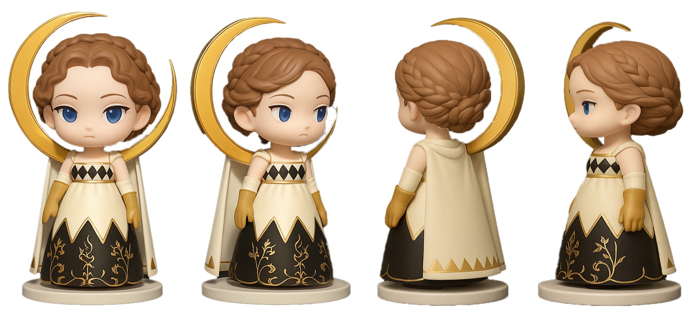

Moon and stars: IP design based on Mucha's style
Inspired by Mucha Art Nouveau style, this IP design blends celestial themes with natural elements and feminine silhouettes to artistically evoke the beauty and mystery of the moon.
My role Team leader in undergraduate study: 3D Modeling class in Blender
Background
Born during a lunar eclipse and celestial realignment, Luna is the fabled reincarnation of the Moon. Raised under the rigorous discipline of the Silver Moon Order, she was destined to become the next 'Watcher of the Moon.'
Design Brief
What am I doing?
The project explores how 3D form, material and lighting can translate an abstract concept into a distinctive visual experience.
Why?
The goal was to create a distinctive 3D visual language that communicates Luna's personality while remaining suitable for digital campaigns and brand applications.
Visual Direction
Moodboard
The moodboard gathers Mucha's Art Nouveau posters, celestial motifs and floral ornament to set the palette, line quality and composition.

Concept Exploration
Sketches
Early sketches focused on silhouette, proportion and structural rhythm, helping me compare different visual directions before moving into 3D.



Headdress: Crescent-shaped device coiled at the back.
Hair: Retro courtly style; short with waves or curls.
Expression: Calm and slightly aloof.
Outer Robe: Loose sleeves with pointed, wing-like cuffs.
Inner Layer: Form-fitting with a high collar for mobility.
Skirt: Layered design; sharp serrated outer skirt over a smooth rounded base.
Cape: Cascades from the crescent headdress down the back.
AI as an exploration tool
Based on the completed IP character design, souvenirs were generated using Nano Banana image generation technology.
Prompt
Futuristic 3D object with soft organic geometry, translucent materials, smooth curved surfaces, minimal structure, subtle reflections, atmospheric studio lighting, clean background, high-end product visualisation, experimental yet functional.

Minimal 3D product design with rounded geometry, ergonomic proportions, matte and translucent materials, soft studio lighting, clean composition, premium commercial rendering, realistic material details.

Abstract sculptural form inspired by organic growth, fluid geometry, layered transparent materials, soft gradients, cinematic lighting, surreal yet refined, contemporary 3D visual art.

AI exploration
I used AI to quickly explore different combinations of form, material and lighting before moving into 3D modelling.
The generated variations helped me compare visual directions and identify recurring elements that best matched the intended aesthetic.

I selected elements from multiple AI outputs rather than following a single image.
The final direction combined the strongest ideas in silhouette, material contrast and visual balance.
Final Outcome
The final result combines controlled 3D modelling with AI-assisted exploration to create a cohesive visual language.

Reflection
This project helped me understand how AI can accelerate visual exploration without replacing design judgement. Translating generated references into structured 3D models also strengthened my ability to make deliberate decisions around form, material and composition.
End
Moon and stars: IP design based on Mucha's style